Long Strangle:
A long strangle is a neutral strategy to profit from a big price change – either up or down – in the underlying stock. The strangle is an improvisation over the straddle. The improvisation mainly helps in terms of reduction of the strategy cost, however as a trade-off the points required to breakeven increases.
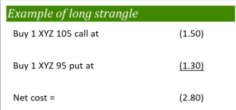
Strategy
Note that the options belong to the same underlying, have same expiration date, have the same strike price and are in the same ratio (1:1).
The OTM options are cheaper than the ATM options and hence, the strategy cost is less compared to that of a straddle.
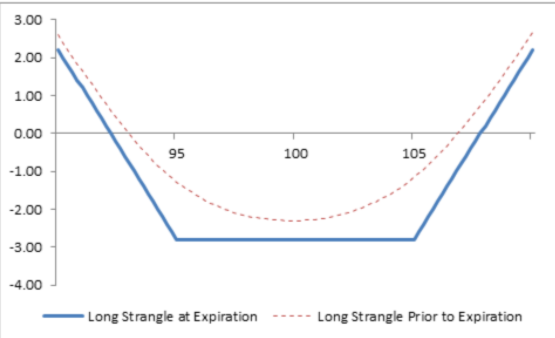
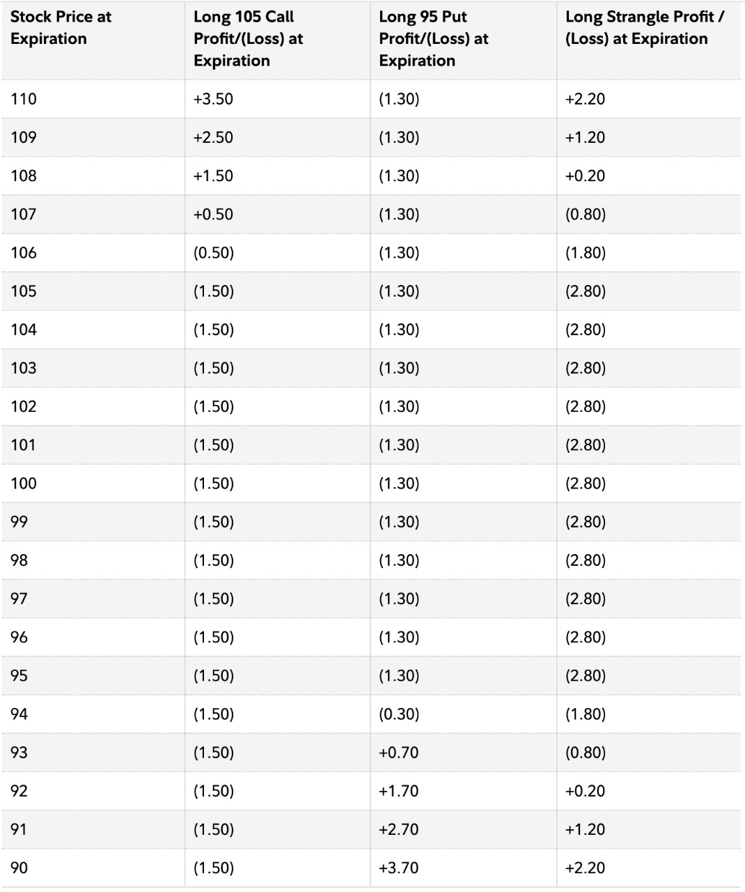
The calculations are as follows:
Net Premium = Net Debit = Premium of Call Option + Premium of Put Option
Maximum Loss = Net Premium Paid
Maximum Profit = Unlimited
Upper Breakeven = Strike Price + Net Premium
Lower Breakeven = Strike Price – Net Premium
A long strangle is established for a net debit (or net cost) and profits if the underlying stock rises above the upper break-even point or falls below the lower break-even point. Profit potential is unlimited on the upside and substantial on the downside. Potential loss is limited to the total cost of the strangle.
The effect of the option Greeks is similar to that on the Long Straddle
Benefits of the strategy:
Drawbacks of the strategy:
Comparison of LONG STRADDLE and LONG STRANGLE:
Cost and Maximum Risk: Higher in Straddle than in Strangle which means more number of strangles can be purchased than straddles for a given capital.
Breakeven Points: Closer for Straddle than for Strangle
Time Decay: Long straddles are less sensitive to time decay than long strangles. Thus, when there is little or no stock price movement, a long straddle will experience a lower percentage loss over a given time period than a comparable strangle.
Short Strangle:
A short strangle is a neutral strategy which aims to profit from little to no price movement in the underlying stock and is opposite to the long strangle.
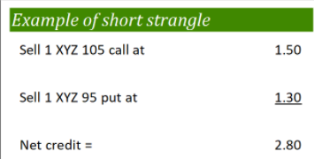
Strategy
Note that the options belong to the same underlying, have same expiration date, have the same strike price and are in the same ratio (1:1).
A short strangle is established for a net credit (or net receipt) and profits if the underlying stock trades in a narrow range between the break-even points. Profit potential is limited to the total premiums received. Potential loss is unlimited if the stock price rises and substantial if the stock price falls.
The calculations are as follows:
𝑁𝑒𝑡 𝑃𝑟𝑒𝑚𝑖𝑢𝑚 = 𝑁𝑒𝑡 𝐶𝑟𝑒𝑑𝑖𝑡 = 𝑃𝑟𝑒𝑚𝑖𝑢𝑚 𝑜𝑓 𝑂𝑇𝑀 𝑐𝑎𝑙𝑙 𝑜𝑝𝑡𝑖𝑜𝑛 + 𝑃𝑟𝑒𝑚𝑖𝑢𝑚 𝑜𝑓 𝑂𝑇𝑀 𝑃𝑢𝑡 𝑜𝑝𝑡𝑖𝑜𝑛
𝑀𝑎𝑥𝑖𝑚𝑢𝑚 𝐺𝑎𝑖𝑛 = 𝑁𝑒𝑡 𝐶𝑟𝑒𝑑𝑖𝑡
𝑀𝑎𝑥𝑖𝑚𝑢𝑚 𝐿𝑜𝑠𝑠 = 𝑈𝑛𝑙𝑖𝑚𝑖𝑡𝑒𝑑
𝐿𝑜𝑤𝑒𝑟 𝐵𝑟𝑒𝑎𝑘𝑒𝑣𝑒𝑛 = 𝑆𝑡𝑟𝑖𝑘𝑒 𝑃𝑟𝑖𝑐𝑒 – 𝑁𝑒𝑡 𝑃𝑟𝑒𝑚𝑖𝑢𝑚
𝑈𝑝𝑝𝑒𝑟 𝐵𝑟𝑒𝑎𝑘𝑒𝑣𝑒𝑛 = 𝑆𝑡𝑟𝑖𝑘𝑒 𝑃𝑟𝑖𝑐𝑒 + 𝑁𝑒𝑡 𝑃𝑟𝑒𝑚𝑖𝑢𝑚
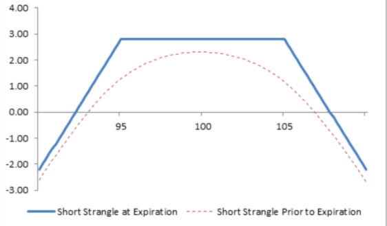
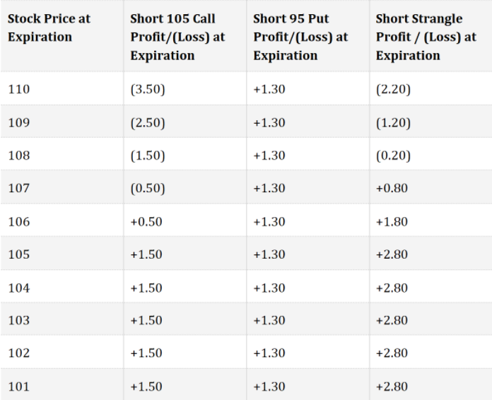
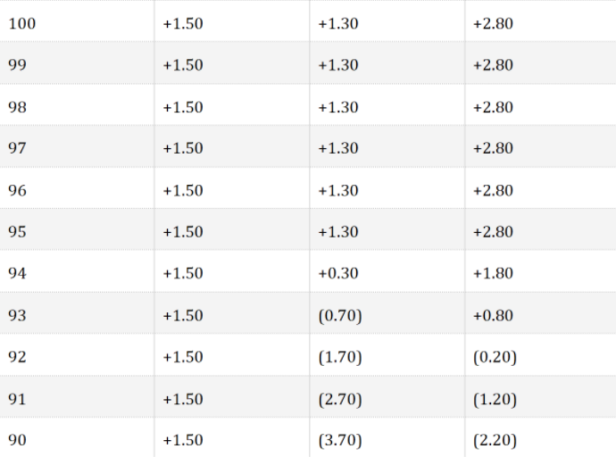
The effect of Greeks is similar to that of Short Straddle.
Benefits of the strategy:
Drawbacks of the strategy:
Comparison of SHORT STRADDLE and SHORT STRANGLE:
Profit: The premium received and maximum profit potential for selling one strangle are lower than for one straddle.
Breakeven Points: Closer for Strangle than for Straddle which means there is a greater chance of making 100% of the premium received if a short strangle is held to expiration when compared to a Straddle.
Time Decay: Short strangles are less sensitive to time decay than short straddles. Thus, when there is little or no stock price movement, a short strangle will experience a greater percentage profit over a given time period than a comparable short straddle.
Long Iron Condor:
A long iron condor spread is four-part strategy consisting of a bear put spread and a bull call spread in which the strike price of the long put is lower than the strike price of the long call. All options have the same expiration date.
A long iron condor spread is the strategy of choice when the forecast is for a stock price move outside the range of the highest and lowest strike prices. Unlike a long strangle, however, the profit potential of a long iron condor spread is limited. Also, the commissions for a condor spread are higher than for a strangle. The trade-off is that a long iron condor spread has breakeven points closer to the current stock price than a comparable long strangle.
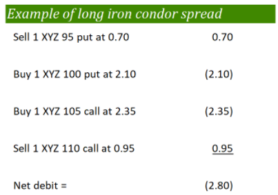
Strategy
A long iron condor spread is established for a net debit, and both the potential profit and maximum risk are limited. The maximum profit potential is realized if the stock price is above the highest strike or below the lowest strike at expiration. The maximum risk is realized if the stock price is equal to or between the strike prices of the long options on the expiration date, in which case all options expire worthless.
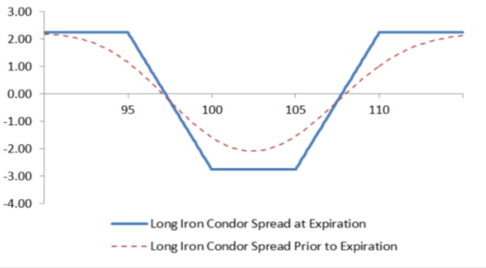
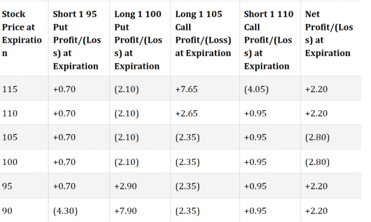
In the example above, one 95 Put is sold, one 100 put is purchased, one 105 Call is purchased and one 110 Call is sold, so the four strike prices are equidistant. However, it is normal for the distance between the long call and long put to be greater than the distance between the long and short options of the same type. For example, an 85-90 Bear Put Spread might be combined with a 105-110 Bull Call Spread to create a long iron condor in which the distance between the strike prices of the long options is 15 points while the distance between the strike prices of the bull and bear spreads are 5 points.
The calculations are as follows:
𝑁𝑒𝑡 𝐷𝑒𝑏𝑖𝑡 = 𝑃𝑟𝑒𝑚𝑖𝑢𝑚 𝑜𝑓 𝑙𝑜𝑛𝑔 𝑜𝑝𝑡𝑖𝑜𝑛𝑠 – 𝑃𝑟𝑒𝑚𝑖𝑢𝑚 𝑜𝑓 𝑠ℎ𝑜𝑟𝑡 𝑜𝑝𝑡𝑖𝑜𝑛𝑠
𝑀𝑎𝑥𝑖𝑚𝑢𝑚 𝐿𝑜𝑠𝑠 = 𝑁𝑒𝑡 𝐷𝑒𝑏𝑖𝑡
𝑀𝑎𝑥𝑖𝑚𝑢𝑚 𝑃𝑟𝑜𝑓𝑖𝑡 = 𝑀𝑎𝑥𝑖𝑚𝑢𝑚 (𝑆𝑡𝑟𝑖𝑘𝑒 𝑃𝑟𝑖𝑐𝑒 𝑜𝑓 𝐿𝑜𝑛𝑔 𝐶𝑎𝑙𝑙 – 𝑆𝑡𝑟𝑖𝑘𝑒 𝑃𝑟𝑖𝑐𝑒 𝑜𝑓 𝑆ℎ𝑜𝑟𝑡 𝐶𝑎𝑙𝑙,𝑆𝑡𝑟𝑖𝑘𝑒 𝑃𝑟𝑖𝑐𝑒 𝑜𝑓 𝐿𝑜𝑛𝑔 𝑃𝑢𝑡 −𝑆𝑡𝑟𝑖𝑘𝑒 𝑃𝑟𝑖𝑐𝑒 𝑜𝑓 𝑆ℎ𝑜𝑟𝑡 𝑃𝑢𝑡) – 𝑁𝑒𝑡 𝐷𝑒𝑏𝑖𝑡
𝐿𝑜𝑤𝑒𝑟 𝐵𝑟𝑒𝑎𝑘𝑒𝑣𝑒𝑛 = 𝑆𝑡𝑟𝑖𝑘𝑒 𝑃𝑟𝑖𝑐𝑒 𝑜𝑓 𝐿𝑜𝑛𝑔 𝑃𝑢𝑡 – 𝑁𝑒𝑡 𝐷𝑒𝑏𝑖𝑡
𝑈𝑝𝑝𝑒𝑟 𝐵𝑟𝑒𝑎𝑘𝑒𝑣𝑒𝑛 = 𝑆𝑡𝑟𝑖𝑘𝑒 𝑃𝑟𝑖𝑐𝑒 𝑜𝑓 𝐿𝑜𝑛𝑔 𝐶𝑎𝑙𝑙 – 𝑁𝑒𝑡 𝐷𝑒𝑏𝑖𝑡
Option Greeks:
Delta:
Delta is at or near zero at initiation. It tends to bottom out below zero when the underlying price is below the lower strike and peak out above zero when the underlying price is above the higher strike. That said, while Delta does become non-zero as the underlying price moves, it does not deviate much from zero. As such, changes in the price of the underlying do not have much impact on this strategy because of the way it is structure
Gamma:
Gamma is positive and is at its highest point in between the two middle strikes. As the underlying price moves away from the midpoint of the two middle strike and approaches either the lower or the higher strike, Gamma tends to move into negative before bottoming out around these extreme strikes.
Vega:
Vega is positive and is at its highest point between the two middle strikes, meaning the positive impact of a rise in volatility is the greatest around the middle strikes. Volatility benefits as long as the position in unprofitable. That
said, Vega turns negative when the position becomes profitable, meaning rising volatility now starts hurting the position.
Theta:
Theta is negative and is at its lowest point between the two middle strikes, meaning time decay hurts the most around the middle strikes. Time decay hurts the position as long as it is unprofitable. That said, Theta turns positive when the position becomes profitable, meaning time decay now starts benefiting the position.
Benefits of the strategy:
Drawbacks of the strategy:
Short Iron Condor:
A short iron condor is a neutral strategy
which aims to profit from neutral stock price
action between the strike price of the short options
with limited risk.
A short iron condor spread is a four-part strategy consisting of a bull put spread and a bear call spread in which the strike price of the short put is lower than the strike price of the short call. All options have the same expiration date.
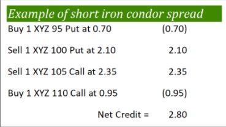
Strategy
A Short Iron Condor is a strategy that involves buying a lower strike Put, selling a lower middle strike Put, selling a higher middle strike Call, and buying a higher strike Call. Each of these options would have the same underlying instrument and expiration date. Usually, the lower strike and the lower middle strike Puts are OTM Puts, whereas the higher middle strike and the higher strike Calls are OTM Calls. At the time of initiating this strategy, the underlying price is usually somewhere between the two middle strikes. Usually, all the four options are equidistant from each other. That said, this is not a hard and fast rule.
A Short Iron Condor is a net credit strategy. In terms of the risk reward profile, a Short Iron Condor is quite attractive. In absolute terms, the maximum potential profit under this strategy tends to be larger than the maximum
potential loss. As a result, this strategy can be initiated by intermediate option traders as well. Also, as we shall later see, Short Iron Condor has a similar payoff structure as a Long Call Condor or a Long Put Condor. However, there are differences. The major difference is that Long Call/Put Condor are net debit strategies, while a Short Iron Condor is a net credit strategy.
An iron condor improvises a short strangle by plugging in the open ends. Essentially, it is like hedging a short strangle. This decreases the risk of the strategy, but the tradeoff is lower profits.
The calculations are as follows:
𝑆𝑝𝑟𝑒𝑎𝑑 = 𝐷𝑖𝑓𝑓𝑒𝑟𝑒𝑛𝑐𝑒 𝑖𝑛 𝑃𝑟𝑖𝑐𝑒𝑠 𝑜𝑓 𝑡ℎ𝑒 𝐵𝑢𝑙𝑙 𝑃𝑢𝑡 𝑆𝑝𝑟𝑒𝑎𝑑 (𝑜𝑟 𝐵𝑒𝑎𝑟 𝐶𝑎𝑙𝑙 𝑆𝑝𝑟𝑒𝑎𝑑)
𝑁𝑒𝑡 𝐶𝑟𝑒𝑑𝑖𝑡 = 𝑃𝑟𝑒𝑚𝑖𝑢𝑚 𝑜𝑓 𝑆ℎ𝑜𝑟𝑡 𝐶𝑎𝑙𝑙𝑠 – 𝑃𝑟𝑒𝑚𝑖𝑢𝑚 𝑜𝑓 𝐿𝑜𝑛𝑔 𝐶𝑎𝑙𝑙𝑠
𝑀𝑎𝑥𝑖𝑚𝑢𝑚 𝑃𝑟𝑜𝑓𝑖𝑡 = 𝑁𝑒𝑡 𝐶𝑟𝑒𝑑𝑖𝑡
𝑀𝑎𝑥𝑖𝑚𝑢𝑚 𝐿𝑜𝑠𝑠 = 𝑆𝑝𝑟𝑒𝑎𝑑 – 𝑁𝑒𝑡 𝐶𝑟𝑒𝑑𝑖𝑡
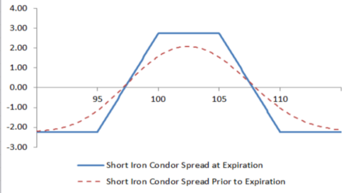
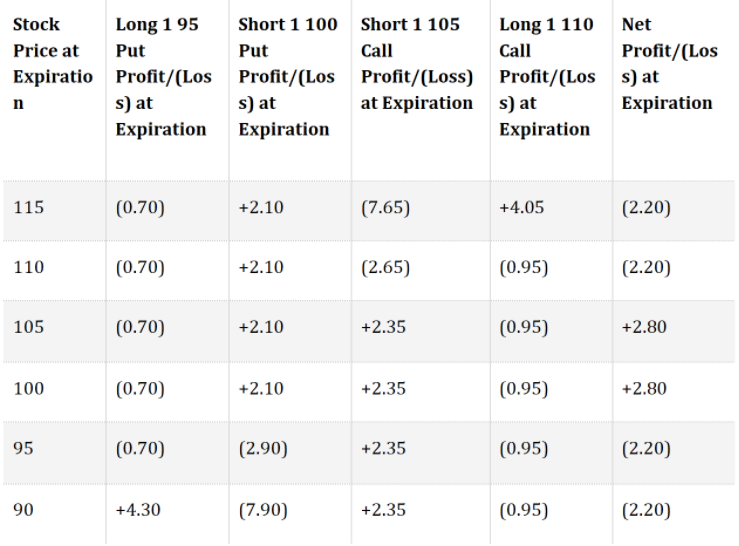
Option Greeks:
Delta:
Delta is at or near zero at initiation. It tends to peak out above zero when the underlying price is below the lower strike and bottom out below zero when the underlying price is above the higher strike. That said, while Delta does become non-zero as the underlying price moves, it does not deviate much from zero. As such, changes in the price of the underlying do not have much impact on this strategy because of the way it is structured.
Gamma:
Gamma is negative and is at its lowest point in between the two middle strikes. As the underlying price starts moving away from the midpoint of the two middle strikes and approaches either the lower or the higher strike, Gamma tends to move into positive before peaking out around these extreme strikes.
Vega:
Vega is negative and is at its lowest point between the two middle strikes, meaning the negative impact of a rise in volatility is the highest around the middle strikes. Volatility hurts as long as the position in profitable. That said, Vega turns positive when the position becomes unprofitable, meaning a rise in volatility now starts helping the position.
Theta:
Theta is positive and is at its highest point between the two middle strikes, meaning time decay is most helpful around the middle strikes. Time decay benefits the position as long as it is profitable. That said, Theta turns negative when the position becomes unprofitable, meaning time decay now starts hurting the position.
Benefits of the strategy:
Drawbacks of the strategy:
Max Pain:
Max pain, or the max pain price, is the strike price with the most open contract puts and calls and the price at which the stock would cause financial losses for the largest number of option holders at expiration.
According to the Max Pain Theory, almost 90% of the options expire worthless. While this number varies among different books and sources, the main idea is that a huge number of the options expire worthless. Based on this statement, a set of logical deductions can be made which in turn are used to predict a price at which the market is most likely to expire.
The deductions are as follows:
This means that the option prices are driven to a point which causes least pain to the option writers. Based on the open interest, we can calculate this price. If this theory holds, then the market would expire at that price. As we can calculate the position of maximum pain, we can essentially know the expiry strike price. Note that this value changes on a daily basis and thus, calculating it on the day of expiry gives the best result.
Steps to Calculate Max Pain:
This level, at which least amount of money is lost by option writers is the point at which maximum pain is caused to option buyers. Therefore this is the price at which the market is most likely to expire.
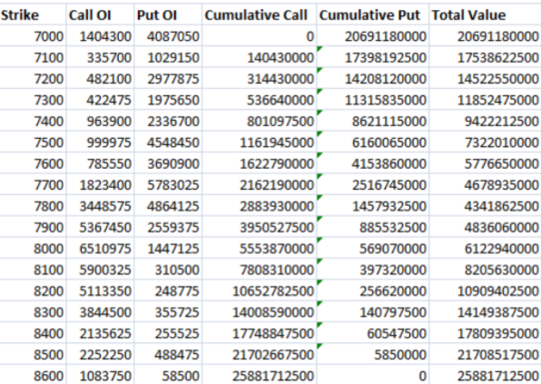
Plotting the above values on a graph we get,
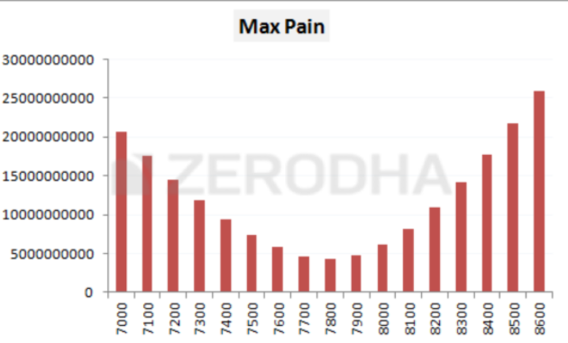
As you can see, the 7800 strike is the point at which option writers would lose the least amount of money, so as per the option pain theory, 7800 is where the market is likely to expire